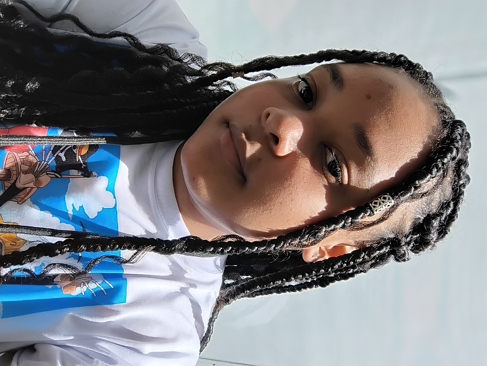

Cozinhar
Gostei após ver todo mundo cozinhando em uma reunião de família, embora não me considere muito boa eu gosto bastante de cozinhar, minha vó me ensinou e venho praticando para melhorar.
Entre flores, descobertas e novos aprendizados...
🧪Sou uma pessoa tranquila, dedicada e sempre disposta a aprender coisas novas. Gosto de atividades que me trazem paz e bem-estar, como ler, assistir filmes, fazer um pouco de crochê e aproveitar momentos simples do dia a dia. Também tenho carinho por animais e valorizo muito o respeito e a boa convivência com as pessoas ao meu redor.
Busco crescer pessoalmente e profissionalmente, sempre correndo atrás dos meus objetivos com responsabilidade e determinação. Tenho interesse na área da saúde, gosto de cuidar das pessoas e sonho em construir um futuro estável, com muitas conquistas e aprendizados.

Entre flores, descobertas e novos aprendizados...
🧪Ela é uma jovem em constante construção, marcada por fases, aprendizados e transformações ao longo de sua trajetória. Sua história ainda está sendo escrita, mas já carrega significados importantes que refletem quem ela é e quem deseja se tornar. Com um olhar atento, ela observa o mundo ao seu redor buscando compreender não apenas o que vê, mas também o que sente.
Desde cedo demonstrou ser uma pessoa mais reservada e observadora, preferindo entender antes de se expressar. Essa característica a tornou alguém que valoriza os pequenos detalhes e encontra sentido em experiências simples do dia a dia. Sua forma de pensar é profunda, e mesmo quando enfrenta dificuldades para organizar seus próprios sentimentos, busca transformar isso em aprendizado e crescimento pessoal.
Seus interesses são diversos e refletem sua curiosidade natural. Ela aprecia momentos tranquilos, gosta de ler, escrever poemas, assistir filmes e séries variados, além de ter um carinho especial por animais. Para ela, esses momentos não são apenas lazer, mas também formas de se conectar consigo mesma e encontrar equilíbrio.
Ao longo de sua vida, vivenciou situações que contribuíram para moldar sua maneira de enxergar o mundo. Entre momentos simples e desafios mais complexos, aprendeu a crescer mesmo quando as circunstâncias não eram fáceis. Essas experiências fortaleceram sua capacidade de seguir em frente, mantendo um olhar sensível, mas também determinado.
Em constante evolução, ela acredita que cada etapa da vida traz consigo novos aprendizados. Entre desafios, conquistas e descobertas, ela segue escrevendo sua própria história com autenticidade, sensibilidade e um olhar voltado para o futuro, buscando sempre crescer e se tornar uma versão melhor de si mesma.
Todo dia é uma nova oportunidade de aprender algo.
🦋Gostei após ver todo mundo cozinhando em uma reunião de família, embora não me considere muito boa eu gosto bastante de cozinhar, minha vó me ensinou e venho praticando para melhorar.
Gosto de ler e escrever, escrevo vários poemas para passar o tempo, acho que consigo me expressar bem escrevendo. Acho uma boa forma de organizar pensamentos.
Tenho facilidade para resolver algumas coisas com rapidez quando necessário. Consigo me organizar para fazer tarefas sem perder muito tempo.
Quando foco em algo, consigo prestar bastante atenção e me dedicar. Isso me ajuda principalmente em atividades que tenho dificuldade e em tarefas do dia a dia.
Gosto de resolver as coisas de forma simples e eficiente. Não gosto de coisas muito complicadas, sempre procuro maneiras mais fáceis de resolver e organizar minhas tarefas do dia a dia.
Este site
🌿Baixe meu currículo completo em PDF.
📄 Visualizar currículo (PDF)